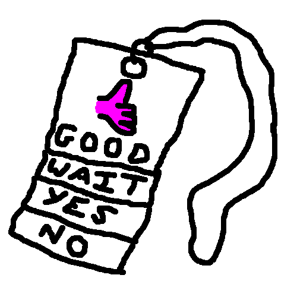

Communication Tools Hub
Choose a tool below.

PECS Lanyard Creator
Design and print personalised lanyards using your own images or shared symbols.
Drag to reorder cards
Customizable text colors
Optional stacking tabs
Now and Next Lanyard
Create printable visual timetables using your own images or shared symbols.
At a glance now and next events
Customizable text colors
Add events to a printable PDF
Tabbed Lanyard Timetable
Design and print personalised tabbed timetable lanyards.
Drag to reorder cards
Customizable text colors
Tab markers for quick access
Communication Board Creator
Create customizable communication boards with adjustable symbol sizes and layouts.
Drag to reorder cards
Customizable text colors
General perpose boardmaking